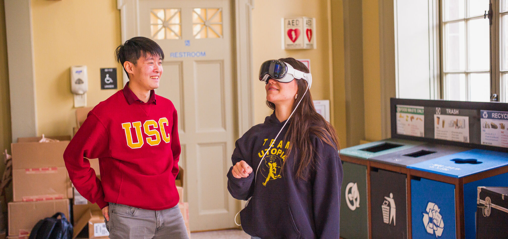

Quest 3
Programmed a VR training experience that mimics real Kia car door assembly processes on the Meta Quest 3.
I designed interactive UI using HCI concepts, implemented features including a custom gyroscopic compass and ghost hands to train the users. I also built a live
data backend to track completion time and mistakes for every run to allow for measurable success heuristics.
Quest 3UnityTraining SimulationData LoggingUX for Manufacturing
Built and customized multiuser immersive training scenarios for organizations using Unity, HTC Vive Pro 2 and HTC Vive Cosmos.
Programmed custom controllers and set up realistic interactions. Worked with Photon multiuser networking and worked to allow accurate replays of each scenario in a 6DOF space to rewatch after.
Designed a sandbox scenario creation system for the user to put together scenarios. Developed branching interactions,
performance feedback, and a hand-tracked quiz flows.
HTC Vive Pro 2PhotonTraining DesignHand Tracking

SecureMR
A mixed reality project to help people manage diabetes. Using SecureMR camera privacy (allowing no one, including the developer to access the user's data) and 3D
object recognition, the app identifies foods around the user, cross-references them with
nutritional data, and provides visual guidance based on their current glucose levels. Over the course of 36 hours,I developed the entire front end with Diabetes type selection, and custom UI corresponding to what feedback the user needed including macros,
a grade and understanding of if the user sahould consume it, color coding and visuals to further indicate, and an algorithm to access the food based on their glucose levels.
Mixed RealitySecureMRComputer VisionPico 3

Mobile AR Education
Developed a mobile AR experience designed for 5,000 graduates. Led a team of 20 people through development of interactive
visuals that layered digital celebration moments over the physical ceremony using object recognition and tracking and location detection, and made compatible with all
Apple and Android devices.
Mobile ARUnityLarge-scale Deployment

XR Education
Created an augmented reality experience using the hololens where the user fought monsters and found health kits in certain image recognition detected locations across campus.
Designed various levels and linked animations to a variety of interactions to gamify learning about campus resources.
EducationGaminificationHololens ARObject recognition

HoloLens
Collaborated with Navy partners to create HoloLens AR tutorials that guide users through
Cold Spray machine repair workflows. Designed multimodal UI to display video, 3D models, and
step-by-step instructions on detected objects.
HoloLensIndustrial ARHCI Implementation

Surgical VR
Prototyped VR features to control a high-precision surgical experience. Created custom shaders for
camera feeds in VR and worked on testing and debugging to reduce latency between cameras and
headsets for a more responsive experience.
Medical VRCustom ShadersLow-latency Pipelines
Built a VR island environment using HTC hardware and a walking pod to study how exercise impacts
cognition. Designed custom terrain, optimized performance, and trained four new hires on building
complex research-ready VR systems.
HTC VRResearchLocomotion
Worked 10-40 hours a week at this lab for four years and trained 30+other employees on XR devices,
software, and supported lab-wide prototyping and production workflows. Taught classes and created
tutorials on how to make XR on Valve, Hololens, HTC, Oculus, 360 video, and Magic Leap.
AR/VR InstructionTutorial DesignUnity
Device TrainingVideo Production

XR
Built software that enabled students to create VR experiences without coding. Focused on learnability,
workflow clarity, and rapid iteration for creators.
UnityToolingHCI
Creator Workflows

AR Guide
Developed an AR pipetting guide to support Coronavirus testing workflows and collaborated with a
Microsoft team to improve the Guides interface and usability.
ARPrototypingWorkflow UX
Microsoft Guides
EChO Foundation — AR App Development
EChO – Eradicate Childhood Obesity Foundation • Content Creator
Back to featured carousel
Developed Unity backend features for augmented reality apps and collaborated with a small team to
iterate quickly, troubleshoot issues, and improve content reliability.
UnityMobile ARiOS
Iteration

AR Content
Created videos designed to appear in AR experiences, produced promo/tutorial content, and built web
pages that helped customers create and manage their Hoverlay accounts.
AR VideoVideo ProductionTutorials
Web Pages

Best Use of Apple Vision Pro
Award-winning multiplayer social AR experience built for Apple Vision Pro.
Paw Pals Connect features off-cloud, LLM-driven virtual dogs designed to
facilitate real-world human connection — not by replacing people with virtual
pets, but by learning about users over time and creating joyful, organic
coincidences that bring pet owners together in real life.
The system leverages spatial awareness, voice interaction, and low-latency
agent behavior to enable shared mixed-reality social moments. Built during
MIT Reality Hack 2025 with a multidisciplinary team.
Apple Vision Pro
Social AR
LLM Agents
Spatial Computing
Voice Interaction
Multiplayer